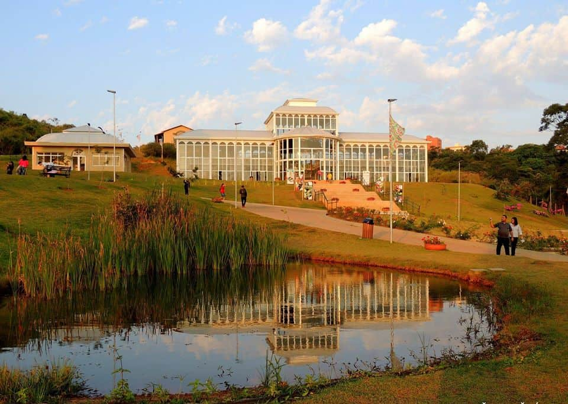

Sobre Sorocaba
Sorocaba é uma das principais cidades do interior paulista, localizada a cerca de 100 km da capital São Paulo. Possui mais de 700 mil habitantes, sendo um importante polo industrial, comercial e educacional do estado.
A cidade teve origem no século XVII com a bandeira de Baltazar Fernandes, que fundou o povoado de Sorocaba. Ao longo do tempo, a cidade se desenvolveu e se destacou pela produção de ferro e pelo ciclo das tropas, com comércio de mulas e outros produtos.
O nome Sorocaba tem origem tupi e significa “terra rasgada” ou “buraco na terra”. É uma cidade com forte desenvolvimento urbano, mas que ainda preserva áreas verdes, parques e uma rica história cultural.
Sorocaba também se destaca pela mobilidade urbana, sendo referência no uso de tecnologias no transporte público e urbanismo.
Aspectos geográficos e políticos
Limita-se com os municípios de Votorantim, Araçoiaba da Serra, Iperó, Porto Feliz, Itu, Salto de Pirapora, Piedade e Alumínio. Está situada na região sudeste, integrando a Região Metropolitana de Sorocaba.
Parque Zoológico Municipal Quinzinho de Barros

Um dos zoológicos mais importantes do Brasil, o Quinzinho de Barros abriga diversas espécies e oferece atividades educativas e de lazer para toda a família. É um ótimo local para crianças e adultos conhecerem mais sobre a fauna e a preservação ambiental.
Parque das Águas
Um espaço de lazer com espelhos d’água, fontes iluminadas, pista de caminhada, ciclovia, playgrounds e áreas para descanso. É um dos cartões postais de Sorocaba, ideal para relaxar e curtir a natureza no meio da cidade.
Jardim Botânico de Sorocaba

Um espaço que une ciência, lazer e beleza natural. O Jardim Botânico Irmãos Villas-Bôas oferece trilhas, jardins temáticos e uma vista panorâmica incrível da cidade. Perfeito para passeios tranquilos e educativos.